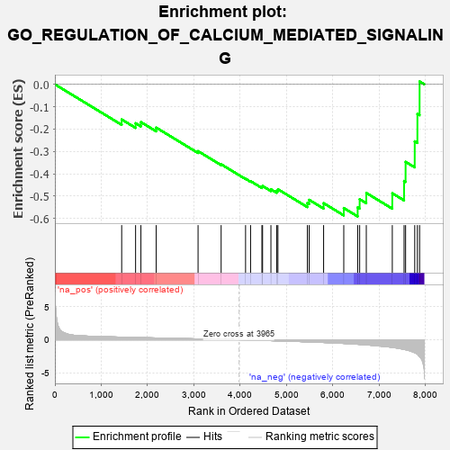
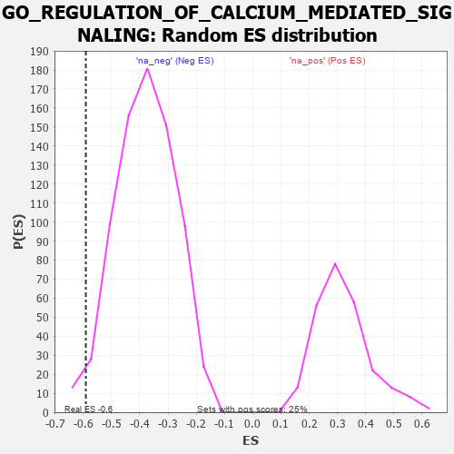

| | | Dataset | 7d |
| Phenotype | NoPhenotypeAvailable |
| Upregulated in class | na_neg |
| GeneSet | GO_REGULATION_OF_CALCIUM_MEDIATED_SIGNALING |
| Enrichment Score (ES) | -0.59121394 |
| Normalized Enrichment Score (NES) | -1.5613774 |
| Nominal p-value | 0.022666667 |
| FDR q-value | 0.12567209 |
| FWER p-Value | 1.0 |
Table: GSEA Results Summary

Fig 1: Enrichment plot: GO_REGULATION_OF_CALCIUM_MEDIATED_SIGNALING
Profile of the Running ES Score & Positions of GeneSet Members on the Rank Ordered List
| PROBE | GENE SYMBOL | GENE_TITLE | RANK IN GENE LIST | RANK METRIC SCORE | RUNNING ES | CORE ENRICHMENT | | 1 | PTBP1 | | | 1441 | 0.402 | -0.1573 | No |
| 2 | JPH1 | | | 1741 | 0.347 | -0.1741 | No |
| 3 | NFAT5 | | | 1856 | 0.326 | -0.1690 | No |
| 4 | SYK | | | 2186 | 0.278 | -0.1937 | No |
| 5 | CHP1 | | | 3089 | 0.138 | -0.2990 | No |
| 6 | CHERP | | | 3587 | 0.062 | -0.3578 | No |
| 7 | MTOR | | | 4114 | -0.025 | -0.4225 | No |
| 8 | FHL2 | | | 4222 | -0.046 | -0.4333 | No |
| 9 | LRRK2 | | | 4467 | -0.087 | -0.4587 | No |
| 10 | JPH3 | | | 4481 | -0.091 | -0.4549 | No |
| 11 | ITPR1 | | | 4661 | -0.130 | -0.4697 | No |
| 12 | MYO5A | | | 4787 | -0.155 | -0.4761 | No |
| 13 | P2RX4 | | | 4813 | -0.161 | -0.4696 | No |
| 14 | EFHB | | | 5447 | -0.306 | -0.5309 | No |
| 15 | ACTN3 | | | 5486 | -0.315 | -0.5169 | No |
| 16 | ADA | | | 5798 | -0.405 | -0.5317 | No |
| 17 | RGN | | | 6233 | -0.547 | -0.5536 | Yes |
| 18 | DYRK2 | | | 6533 | -0.677 | -0.5507 | Yes |
| 19 | P2RX5 | | | 6576 | -0.699 | -0.5141 | Yes |
| 20 | GSK3B | | | 6719 | -0.768 | -0.4860 | Yes |
| 21 | CIB1 | | | 7280 | -1.152 | -0.4875 | Yes |
| 22 | CD22 | | | 7534 | -1.449 | -0.4326 | Yes |
| 23 | CALM1 | | | 7567 | -1.499 | -0.3468 | Yes |
| 24 | PDE4D | | | 7764 | -1.944 | -0.2551 | Yes |
| 25 | PKD2 | | | 7822 | -2.167 | -0.1326 | Yes |
| 26 | CALM3 | | | 7869 | -2.525 | 0.0128 | Yes |
Table: GSEA details [plain text format]

Fig 2: GO_REGULATION_OF_CALCIUM_MEDIATED_SIGNALING: Random ES distribution
Gene set null distribution of ES for GO_REGULATION_OF_CALCIUM_MEDIATED_SIGNALING